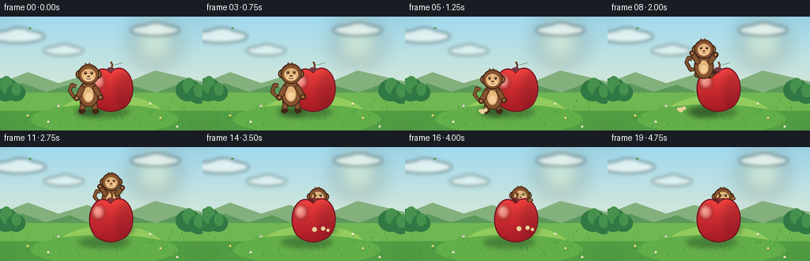
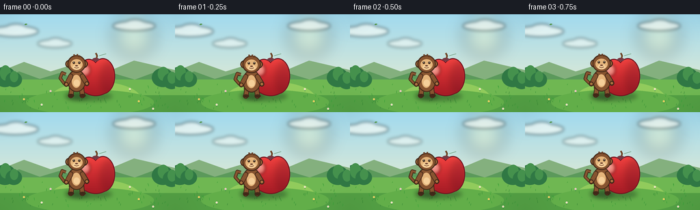
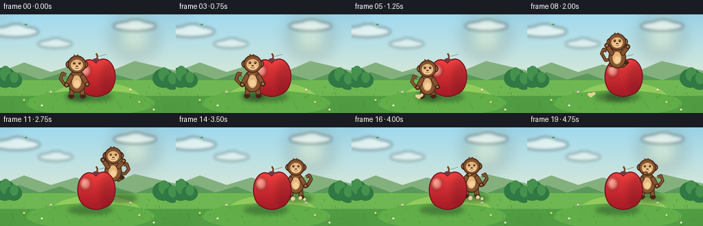
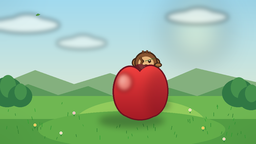
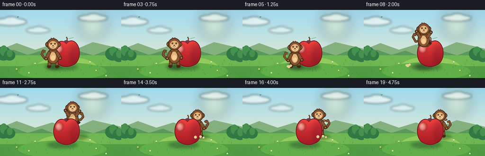
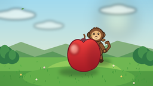
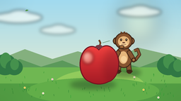

CODING AGENTS AS PIXEL WORLD MODELS
traex/DeepSeek-V4.1-Flash · dynamic_spatial_relationship_0062
点击播放 · 原生 RGB 像素
逐轮保存的候选
回放视频、检查图与代码变化。
每份候选均可单独播放。实际图片检查记录在下方工具轨迹中。
候选 01播放与检查图
点击播放 · 原生 RGB 像素

展开代码变化
--- 上一保存版本
+++ 本次保存版本
@@ -0,0 +1,520 @@
+from __future__ import annotations
+
+import math
+from pathlib import Path
+
+import numpy as np
+from PIL import Image, ImageDraw, ImageFilter
+
+from artifact_io import save
+
+
+WIDTH = 256
+HEIGHT = 144
+FRAMES = 20
+FPS = 4.0
+SS = 4
+
+
+def sc(value: float) -> float:
+ return value * SS
+
+
+def rgba(color: tuple[int, int, int], alpha: int = 255) -> tuple[int, int, int, int]:
+ return (*color, alpha)
+
+
+def clamp(value: float, low: float = 0.0, high: float = 1.0) -> float:
+ return max(low, min(high, value))
+
+
+def smoothstep(value: float) -> float:
+ value = clamp(value)
+ return value * value * (3.0 - 2.0 * value)
+
+
+def lerp(a: float, b: float, amount: float) -> float:
+ return a + (b - a) * amount
+
+
+def vertical_gradient(top: tuple[int, int, int], bottom: tuple[int, int, int]) -> Image.Image:
+ top_arr = np.array(top, dtype=np.float32)
+ bottom_arr = np.array(bottom, dtype=np.float32)
+ blend = np.linspace(0.0, 1.0, HEIGHT, dtype=np.float32)[:, None, None]
+ arr = top_arr[None, None, :] * (1.0 - blend) + bottom_arr[None, None, :] * blend
+ arr = np.repeat(arr, WIDTH, axis=1).astype(np.uint8)
+ return Image.fromarray(arr, "RGB").resize((WIDTH * SS, HEIGHT * SS), Image.Resampling.NEAREST)
+
+
+def ellipse(draw: ImageDraw.ImageDraw, box: tuple[float, float, float, float], fill) -> None:
+ draw.ellipse(tuple(sc(v) for v in box), fill=fill)
+
+
+def line(
+ draw: ImageDraw.ImageDraw,
+ points: list[tuple[float, float]],
+ fill,
+ width: float,
+ joint: str = "curve",
+) -> None:
+ draw.line([(sc(x), sc(y)) for x, y in points], fill=fill, width=max(1, round(sc(width))), joint=joint)
+
+
+def capsule(
+ draw: ImageDraw.ImageDraw,
+ start: tuple[float, float],
+ end: tuple[float, float],
+ width: float,
+ fill,
+ outline=None,
+) -> None:
+ if outline is not None:
+ line(draw, [start, end], outline, width + 2.0)
+ radius = width / 2.0 + 1.0
+ ellipse(draw, (start[0] - radius, start[1] - radius, start[0] + radius, start[1] + radius), outline)
+ ellipse(draw, (end[0] - radius, end[1] - radius, end[0] + radius, end[1] + radius), outline)
+ line(draw, [start, end], fill, width)
+ radius = width / 2.0
+ ellipse(draw, (start[0] - radius, start[1] - radius, start[0] + radius, start[1] + radius), fill)
+ ellipse(draw, (end[0] - radius, end[1] - radius, end[0] + radius, end[1] + radius), fill)
+
+
+def soft_shadow(size: tuple[int, int], box: tuple[float, float, float, float], blur: float) -> Image.Image:
+ layer = Image.new("RGBA", size, (0, 0, 0, 0))
+ draw = ImageDraw.Draw(layer)
+ draw.ellipse(tuple(sc(v) for v in box), fill=(22, 43, 27, 92))
+ return layer.filter(ImageFilter.GaussianBlur(sc(blur)))
+
+
+def make_background(frame_index: int) -> Image.Image:
+ size = (WIDTH * SS, HEIGHT * SS)
+ image = vertical_gradient((161, 218, 239), (244, 239, 203)).convert("RGBA")
+ draw = ImageDraw.Draw(image, "RGBA")
+
+ # Warm sun glow behind the scene.
+ glow = Image.new("RGBA", size, (0, 0, 0, 0))
+ glow_draw = ImageDraw.Draw(glow, "RGBA")
+ glow_draw.ellipse(tuple(sc(v) for v in (166, 1, 226, 61)), fill=(255, 246, 184, 80))
+ glow = glow.filter(ImageFilter.GaussianBlur(sc(12)))
+ image.alpha_composite(glow)
+ draw = ImageDraw.Draw(image, "RGBA")
+
+ # Soft, slowly drifting clouds.
+ clouds = Image.new("RGBA", size, (0, 0, 0, 0))
+ cloud_draw = ImageDraw.Draw(clouds, "RGBA")
+ drift = frame_index * 0.19
+ cloud_specs = [
+ (22 + drift, 25, 34, 8, 155),
+ (80 + drift * 0.45, 43, 25, 6, 125),
+ (196 + drift * 0.28, 17, 31, 7, 145),
+ ]
+ for cx, cy, rx, ry, alpha in cloud_specs:
+ cloud_draw.ellipse(
+ tuple(sc(v) for v in (cx - rx, cy - ry, cx + rx, cy + ry)),
+ fill=(255, 255, 247, alpha),
+ )
+ cloud_draw.ellipse(
+ tuple(sc(v) for v in (cx - rx * 0.45, cy - ry * 1.35, cx + rx * 0.55, cy + ry * 0.7)),
+ fill=(255, 255, 249, alpha),
+ )
+ clouds = clouds.filter(ImageFilter.GaussianBlur(sc(2.4)))
+ image.alpha_composite(clouds)
+ draw = ImageDraw.Draw(image, "RGBA")
+
+ # Distant layered hills.
+ draw.polygon(
+ [(sc(0), sc(101)), (sc(0), sc(84)), (sc(35), sc(70)), (sc(74), sc(84)),
+ (sc(110), sc(73)), (sc(151), sc(87)), (sc(196), sc(68)), (sc(256), sc(82)),
+ (sc(256), sc(105))],
+ fill=(132, 176, 126, 255),
+ )
+ draw.polygon(
+ [(sc(0), sc(106)), (sc(0), sc(94)), (sc(28), sc(84)), (sc(58), sc(95)),
+ (sc(88), sc(86)), (sc(121), sc(99)), (sc(157), sc(84)), (sc(197), sc(96)),
+ (sc(224), sc(86)), (sc(256), sc(92)), (sc(256), sc(109))],
+ fill=(91, 153, 91, 255),
+ )
+
+ # Ground with a lighter path of light around the central subject.
+ draw.rectangle((sc(0), sc(96), sc(256), sc(144)), fill=(111, 183, 82, 255))
+ draw.ellipse((sc(73), sc(99), sc(206), sc(151)), fill=(145, 203, 92, 255))
+ draw.rectangle((sc(0), sc(119), sc(256), sc(144)), fill=(82, 158, 67, 255))
+ draw.ellipse((sc(38), sc(111), sc(225), sc(148)), fill=(98, 174, 73, 255))
+
+ # A few restrained background shrubs frame the central action.
+ shrub_specs = [
+ (7, 92, 16, 15), (20, 96, 12, 11), (238, 93, 16, 14), (251, 98, 13, 12),
+ ]
+ for cx, cy, rx, ry in shrub_specs:
+ ellipse(draw, (cx - rx, cy - ry, cx + rx, cy + ry), (48, 120, 68, 255))
+ ellipse(draw, (cx - rx * 0.45, cy - ry * 1.12, cx + rx * 0.55, cy + ry * 0.35),
+ (69, 145, 77, 255))
+
+ rng = np.random.default_rng(62)
+ for _ in range(78):
+ x = float(rng.uniform(3, 253))
+ y = float(rng.uniform(104, 140))
+ if 92 < x < 188 and y < 126:
+ continue
+ length = float(rng.uniform(1.4, 4.2))
+ sway = math.sin(frame_index * 0.42 + x * 0.11) * 0.8
+ shade = int(rng.integers(54, 92))
+ line(
+ draw,
+ [(x, y), (x + sway, y - length)],
+ (45, shade + 72, 49, 150),
+ 0.55,
+ )
+
+ # Tiny flowers give the meadow scale without competing with the actors.
+ for x, y, color in [
+ (35, 125, (250, 222, 108)), (61, 133, (250, 244, 226)),
+ (203, 128, (250, 220, 105)), (224, 139, (250, 242, 222)),
+ (74, 113, (246, 210, 222)), (190, 110, (251, 245, 220)),
+ ]:
+ line(draw, [(x, y + 3), (x, y)], (49, 126, 61, 220), 0.65)
+ ellipse(draw, (x - 1.3, y - 1.3, x + 1.3, y + 1.3), rgba(color))
+ ellipse(draw, (x - 0.45, y - 0.45, x + 0.45, y + 0.45), (240, 151, 72, 255))
+
+ return image
+
+
+def make_apple() -> tuple[Image.Image, tuple[int, int, int, int]]:
+ size = (WIDTH * SS, HEIGHT * SS)
+ body_layer = Image.new("RGBA", size, (0, 0, 0, 0))
+ body_mask = Image.new("L", size, 0)
+ body_draw = ImageDraw.Draw(body_mask)
+
+ cx, cy = 140.0, 91.0
+ shapes = [
+ (cx - 26.0, cy - 24.0, cx + 6.0, cy + 25.0),
+ (cx - 6.0, cy - 25.0, cx + 27.0, cy + 25.0),
+ (cx - 25.0, cy - 18.0, cx + 25.0, cy + 28.0),
+ ]
+ for shape in shapes:
+ body_draw.ellipse(tuple(sc(v) for v in shape), fill=255)
+
+ arr = np.zeros((HEIGHT * SS, WIDTH * SS, 4), dtype=np.uint8)
+ yy = np.linspace(0.0, 1.0, HEIGHT * SS, dtype=np.float32)[:, None]
+ top = np.array([255, 91, 82], dtype=np.float32)
+ mid = np.array([225, 43, 47], dtype=np.float32)
+ bottom = np.array([135, 20, 33], dtype=np.float32)
+ blend = np.clip(yy * 1.2, 0.0, 1.0)
+ colors = top[None, None, :] * (1.0 - blend[..., None]) + mid[None, None, :] * blend[..., None]
+ low_blend = np.clip((yy - 0.48) / 0.52, 0.0, 1.0)
+ colors = colors * (1.0 - low_blend[..., None]) + bottom[None, None, :] * low_blend[..., None]
+ arr[:, :, :3] = np.repeat(colors.astype(np.uint8), WIDTH * SS, axis=1)
+ arr[:, :, 3] = np.asarray(body_mask)
+ body_layer = Image.fromarray(arr, "RGBA")
+
+ # A darker rim makes the silhouette read cleanly against the bright sky.
+ rim = Image.new("RGBA", size, (0, 0, 0, 0))
+ rim_draw = ImageDraw.Draw(rim, "RGBA")
+ for shape in shapes:
+ rim_draw.ellipse(
+ tuple(sc(v) for v in (shape[0] - 1.4, shape[1] - 1.4, shape[2] + 1.4, shape[3] + 1.4)),
+ fill=(111, 18, 32, 255),
+ )
+ rim.alpha_composite(body_layer)
+
+ # Warm reflected light on the left and a soft shadow along the right edge.
+ shade = Image.new("RGBA", size, (0, 0, 0, 0))
+ shade_draw = ImageDraw.Draw(shade, "RGBA")
+ shade_draw.ellipse(tuple(sc(v) for v in (148, 69, 173, 118)), fill=(93, 13, 31, 68))
+ shade = shade.filter(ImageFilter.GaussianBlur(sc(5.0)))
+ shade.putalpha(Image.composite(shade.getchannel("A"), Image.new("L", size, 0), body_mask))
+ rim.alpha_composite(shade)
+
+ highlight = Image.new("RGBA", size, (0, 0, 0, 0))
+ hdraw = ImageDraw.Draw(highlight, "RGBA")
+ hdraw.ellipse(tuple(sc(v) for v in (116, 73, 132, 91)), fill=(255, 208, 185, 124))
+ hdraw.ellipse(tuple(sc(v) for v in (119, 75, 126, 85)), fill=(255, 239, 219, 158))
+ highlight = highlight.filter(ImageFilter.GaussianBlur(sc(2.1)))
+ highlight.putalpha(Image.composite(highlight.getchannel("A"), Image.new("L", size, 0), body_mask))
+ rim.alpha_composite(highlight)
+
+ draw = ImageDraw.Draw(rim, "RGBA")
+ # Stem, leaf, and the small top dimple.
+ line(draw, [(140, 68), (142, 61), (140, 57)], (91, 52, 28, 255), 2.2)
+ line(draw, [(140, 68), (142, 61), (140, 57)], (135, 84, 42, 255), 1.0)
+ draw.polygon(
+ [(143, 60), (151, 54), (160, 57), (153, 62), (146, 63)],
+ fill=(65, 135, 57, 255),
+ )
+ draw.polygon(
+ [(146, 60), (153, 57), (157, 58), (151, 61)],
+ fill=(103, 171, 71, 255),
+ )
+ line(draw, [(145, 61), (155, 58)], (47, 108, 51, 210), 0.75)
+ ellipse(draw, (135, 64, 145, 69), (100, 21, 34, 210))
+
+ return rim, (cx - 33, cy - 29, cx + 33, cy + 29)
+
+
+def monkey_pose(frame_index: int) -> dict[str, float | bool]:
+ if frame_index <= 3:
+ bob = math.sin(frame_index * math.pi / 2.0) * 0.7
+ return {
+ "x": 112.0,
+ "feet_y": 121.0 + bob,
+ "scale": 1.0,
+ "air": 0.0,
+ "crouch": 0.0,
+ "behind": False,
+ "tail_phase": frame_index * 0.5,
+ }
+
+ if frame_index <= 5:
+ crouch = smoothstep((frame_index - 3) / 2.0)
+ return {
+ "x": 112.0 - 1.2 * crouch,
+ "feet_y": 121.0,
+ "scale": 1.0 - 0.04 * crouch,
+ "air": 0.0,
+ "crouch": crouch,
+ "behind": False,
+ "tail_phase": 2.0 + crouch,
+ }
+
+ if frame_index <= 13:
+ u = (frame_index - 5) / 8.0
+ eased_x = smoothstep(u)
+ x = lerp(110.8, 146.0, eased_x)
+ feet_y = lerp(121.0, 104.0, u) - 32.0 * math.sin(math.pi * u)
+ scale = lerp(0.96, 0.86, smoothstep(u))
+ return {
+ "x": x,
+ "feet_y": feet_y,
+ "scale": scale,
+ "air": math.sin(math.pi * u),
+ "crouch": 0.0,
+ "behind": u > 0.69,
+ "tail_phase": 3.0 + u * 5.0,
+ }
+
+ settle = frame_index - 14
+ bounce = -1.6 * math.sin(math.pi * settle / 4.0) if settle < 4 else 0.0
+ return {
+ "x": 146.0,
+ "feet_y": 104.0 + bounce,
+ "scale": 0.86,
+ "air": 0.0,
+ "crouch": 0.0,
+ "behind": True,
+ "tail_phase": 8.0 + frame_index * 0.24,
+ }
+
+
+def draw_monkey(layer: Image.Image, pose: dict[str, float | bool]) -> None:
+ draw = ImageDraw.Draw(layer, "RGBA")
+ x = float(pose["x"])
+ feet_y = float(pose["feet_y"])
+ scale = float(pose["scale"])
+ air = float(pose["air"])
+ crouch = float(pose["crouch"])
+ behind = bool(pose["behind"])
+ tail_phase = float(pose["tail_phase"])
+
+ outline = (65, 39, 24, 255)
+ fur = (135, 84, 48, 255)
+ fur_light = (173, 116, 65, 255)
+ fur_dark = (104, 61, 35, 255)
+ face = (229, 181, 123, 255)
+ muzzle = (245, 207, 153, 255)
+
+ body_center_y = feet_y - 23.0 * scale + crouch * 3.0
+ head_center_y = feet_y - 48.0 * scale + crouch * 4.5 + air * 0.8
+ shoulder_y = body_center_y - 7.0 * scale
+ hip_y = body_center_y + 9.0 * scale
+
+ # Curling tail, kept behind the body.
+ wag = math.sin(tail_phase) * 2.2
+ tail_points = [
+ (x - 8.0 * scale, body_center_y + 2.0 * scale),
+ (x - 18.0 * scale, body_center_y + 4.0 * scale),
+ (x - 24.0 * scale, body_center_y - 4.0 * scale + wag),
+ (x - 21.0 * scale, body_center_y - 12.0 * scale + wag * 0.4),
+ (x - 16.0 * scale, body_center_y - 10.0 * scale),
+ ]
+ line(draw, tail_points, outline, 5.0 * scale)
+ line(draw, tail_points, fur, 3.0 * scale)
+
+ # Legs and feet: tucked during the jump, planted otherwise.
+ if air > 0.12:
+ left_knee = (x - 9.0 * scale, hip_y + (5.0 - air * 4.0) * scale)
+ left_foot = (x - 4.0 * scale, hip_y + (8.0 - air * 8.0) * scale)
+ right_knee = (x + 8.0 * scale, hip_y + (5.0 - air * 3.0) * scale)
+ right_foot = (x + 13.0 * scale, hip_y + (7.0 - air * 9.0) * scale)
+ else:
+ left_knee = (x - 7.0 * scale, hip_y + 2.0 * scale)
+ left_foot = (x - 8.5 * scale, feet_y - 1.5 * scale)
+ right_knee = (x + 7.0 * scale, hip_y + 2.0 * scale)
+ right_foot = (x + 8.5 * scale, feet_y - 1.5 * scale)
+
+ capsule(draw, (x - 5.0 * scale, hip_y), left_knee, 6.2 * scale, fur_dark, outline)
+ capsule(draw, left_knee, left_foot, 5.6 * scale, fur, outline)
+ capsule(draw, (x + 5.0 * scale, hip_y), right_knee, 6.2 * scale, fur_dark, outline)
+ capsule(draw, right_knee, right_foot, 5.6 * scale, fur, outline)
+ ellipse(draw, (left_foot[0] - 4.2 * scale, left_foot[1] - 2.4 * scale,
+ left_foot[0] + 4.8 * scale, left_foot[1] + 2.5 * scale), outline)
+ ellipse(draw, (right_foot[0] - 4.2 * scale, right_foot[1] - 2.4 * scale,
+ right_foot[0] + 4.8 * scale, right_foot[1] + 2.5 * scale), outline)
+
+ # Torso with a lighter chest patch.
+ body_box = (
+ x - 12.0 * scale, body_center_y - 15.0 * scale,
+ x + 12.0 * scale, body_center_y + 15.0 * scale,
+ )
+ ellipse(draw, (body_box[0] - 1.3, body_box[1] - 1.3, body_box[2] + 1.3, body_box[3] + 1.3), outline)
+ ellipse(draw, body_box, fur)
+ ellipse(draw, (x - 7.0 * scale, body_center_y - 9.0 * scale,
+ x + 6.0 * scale, body_center_y + 10.0 * scale), face)
+ ellipse(draw, (x - 4.3 * scale, body_center_y - 2.0 * scale,
+ x + 4.5 * scale, body_center_y + 8.0 * scale), muzzle)
+
+ # Arms change pose to sell the jump.
+ if air > 0.15:
+ left_hand = (x - 16.0 * scale, shoulder_y - 8.0 * scale - air * 4.0 * scale)
+ right_hand = (x + 16.0 * scale, shoulder_y - 7.0 * scale - air * 3.0 * scale)
+ else:
+ left_hand = (x - 15.0 * scale, shoulder_y + 12.0 * scale)
+ right_hand = (x + 15.0 * scale, shoulder_y + 11.0 * scale)
+ capsule(draw, (x - 8.5 * scale, shoulder_y), left_hand, 5.4 * scale, fur, outline)
+ capsule(draw, (x + 8.5 * scale, shoulder_y), right_hand, 5.4 * scale, fur, outline)
+ ellipse(draw, (left_hand[0] - 3.2 * scale, left_hand[1] - 3.2 * scale,
+ left_hand[0] + 3.2 * scale, left_hand[1] + 3.2 * scale), outline)
+ ellipse(draw, (right_hand[0] - 3.2 * scale, right_hand[1] - 3.2 * scale,
+ right_hand[0] + 3.2 * scale, right_hand[1] + 3.2 * scale), outline)
+ ellipse(draw, (left_hand[0] - 1.8 * scale, left_hand[1] - 1.8 * scale,
+ left_hand[0] + 1.8 * scale, left_hand[1] + 1.8 * scale), fur_light)
+ ellipse(draw, (right_hand[0] - 1.8 * scale, right_hand[1] - 1.8 * scale,
+ right_hand[0] + 1.8 * scale, right_hand[1] + 1.8 * scale), fur_light)
+
+ # Ears behind the head.
+ for ear_x in (x - 10.2 * scale, x + 10.2 * scale):
+ ellipse(draw, (ear_x - 6.2 * scale, head_center_y - 6.0 * scale,
+ ear_x + 6.2 * scale, head_center_y + 6.0 * scale), outline)
+ ellipse(draw, (ear_x - 4.7 * scale, head_center_y - 4.6 * scale,
+ ear_x + 4.7 * scale, head_center_y + 4.6 * scale), fur_light)
+ ellipse(draw, (ear_x - 2.8 * scale, head_center_y - 2.8 * scale,
+ ear_x + 2.8 * scale, head_center_y + 2.8 * scale), (204, 139, 91, 255))
+
+ # Head and face.
+ head_box = (
+ x - 12.0 * scale, head_center_y - 11.5 * scale,
+ x + 12.0 * scale, head_center_y + 11.5 * scale,
+ )
+ ellipse(draw, (head_box[0] - 1.4, head_box[1] - 1.4, head_box[2] + 1.4, head_box[3] + 1.4), outline)
+ ellipse(draw, head_box, fur)
+ ellipse(draw, (x - 8.8 * scale, head_center_y - 7.0 * scale,
+ x + 8.8 * scale, head_center_y + 8.8 * scale), face)
+ ellipse(draw, (x - 6.0 * scale, head_center_y + 1.2 * scale,
+ x + 6.0 * scale, head_center_y + 8.8 * scale), muzzle)
+
+ # Hair tuft.
+ line(draw, [(x - 2.5 * scale, head_center_y - 10.5 * scale),
+ (x - 4.0 * scale, head_center_y - 14.0 * scale)], fur_dark, 2.1 * scale)
+ line(draw, [(x + 0.3 * scale, head_center_y - 11.0 * scale),
+ (x + 1.5 * scale, head_center_y - 14.3 * scale)], fur_dark, 2.1 * scale)
+ line(draw, [(x + 3.0 * scale, head_center_y - 10.2 * scale),
+ (x + 5.1 * scale, head_center_y - 12.5 * scale)], fur_dark, 1.9 * scale)
+
+ eye_y = head_center_y - 1.8 * scale
+ eye_dx = 4.0 * scale
+ ellipse(draw, (x - eye_dx - 1.55 * scale, eye_y - 1.9 * scale,
+ x - eye_dx + 1.55 * scale, eye_y + 1.9 * scale), (54, 35, 23, 255))
+ ellipse(draw, (x + eye_dx - 1.55 * scale, eye_y - 1.9 * scale,
+ x + eye_dx + 1.55 * scale, eye_y + 1.9 * scale), (54, 35, 23, 255))
+ ellipse(draw, (x - eye_dx - 0.55 * scale, eye_y - 1.25 * scale,
+ x - eye_dx + 0.4 * scale, eye_y - 0.25 * scale), (255, 250, 227, 255))
+ ellipse(draw, (x + eye_dx - 0.55 * scale, eye_y - 1.25 * scale,
+ x + eye_dx + 0.4 * scale, eye_y - 0.25 * scale), (255, 250, 227, 255))
+
+ ellipse(draw, (x - 2.2 * scale, head_center_y + 1.8 * scale,
+ x + 2.2 * scale, head_center_y + 3.6 * scale), (104, 56, 38, 255))
+ line(draw, [(x - 3.3 * scale, head_center_y + 5.1 * scale),
+ (x, head_center_y + 6.2 * scale),
+ (x + 3.3 * scale, head_center_y + 5.0 * scale)],
+ (112, 61, 42, 255), 0.9 * scale)
+
+ if behind:
+ # A small hand resting on the apple rim is added later, after the apple.
+ pass
+
+
+def draw_front_paw(layer: Image.Image, frame_index: int) -> None:
+ draw = ImageDraw.Draw(layer, "RGBA")
+ wave = math.sin((frame_index - 14) * 0.95) * 1.1 if frame_index >= 15 else 0.0
+ x, y = 158.0, 66.0 + wave
+ ellipse(draw, (x - 3.8, y - 2.2, x + 3.8, y + 2.4), (65, 39, 24, 255))
+ ellipse(draw, (x - 2.5, y - 1.4, x + 2.5, y + 1.5), (173, 116, 65, 255))
+ for offset in (-1.5, 0.0, 1.5):
+ line(draw, [(x + offset, y + 0.7), (x + offset * 1.15, y + 2.0)], (83, 48, 29, 210), 0.45)
+
+
+def draw_dust(layer: Image.Image, frame_index: int) -> None:
+ if 5 <= frame_index <= 9:
+ age = (frame_index - 5) / 4.0
+ alpha = int(100 * (1.0 - age))
+ draw = ImageDraw.Draw(layer, "RGBA")
+ for dx, dy, radius in [(-10, 0, 3.2), (-6, -2, 2.4), (-13, -1, 2.0)]:
+ x = 108.0 + dx - age * 7.0
+ y = 120.0 + dy - age * 3.0
+ ellipse(draw, (x - radius, y - radius, x + radius, y + radius), (229, 209, 151, alpha))
+ if 12 <= frame_index <= 16:
+ age = (frame_index - 12) / 4.0
+ alpha = int(105 * (1.0 - age))
+ draw = ImageDraw.Draw(layer, "RGBA")
+ for dx, dy, radius in [(-7, 0, 3.0), (4, -1, 2.6), (10, 1, 2.0)]:
+ x = 146.0 + dx + age * 5.0
+ y = 105.0 + dy - age * 2.0
+ ellipse(draw, (x - radius, y - radius, x + radius, y + radius), (229, 209, 151, alpha))
+
+
+def render_frame(frame_index: int, apple: Image.Image) -> np.ndarray:
+ size = (WIDTH * SS, HEIGHT * SS)
+ pose = monkey_pose(frame_index)
+ image = make_background(frame_index)
+
+ # Ground shadows anchor both actors.
+ image.alpha_composite(soft_shadow(size, (99, 114, 164, 127), 3.1))
+ if not bool(pose["behind"]):
+ mx = float(pose["x"])
+ image.alpha_composite(soft_shadow(size, (mx - 17, 114, mx + 17, 126), 3.2))
+ else:
+ image.alpha_composite(soft_shadow(size, (128, 98, 170, 111), 3.0))
+
+ if bool(pose["behind"]):
+ monkey_layer = Image.new("RGBA", size, (0, 0, 0, 0))
+ draw_monkey(monkey_layer, pose)
+ image.alpha_composite(monkey_layer)
+ image.alpha_composite(apple)
+ if frame_index >= 15:
+ draw_front_paw(image, frame_index)
+ else:
+ image.alpha_composite(apple)
+ monkey_layer = Image.new("RGBA", size, (0, 0, 0, 0))
+ draw_monkey(monkey_layer, pose)
+ image.alpha_composite(monkey_layer)
+
+ draw_dust(image, frame_index)
+
+ # Gentle vignette and final grain-free downsample.
+ vignette = Image.new("L", size, 0)
+ vdraw = ImageDraw.Draw(vignette)
+ vdraw.ellipse(tuple(sc(v) for v in (-35, -22, 291, 166)), fill=255)
+ vignette = vignette.filter(ImageFilter.GaussianBlur(sc(17)))
+ dark = Image.new("RGBA", size, (25, 42, 31, 26))
+ image = Image.composite(image, Image.alpha_composite(image, dark), vignette)
+ return np.asarray(image.convert("RGB").resize((WIDTH, HEIGHT), Image.Resampling.LANCZOS), dtype=np.uint8)
+
+
+def main() -> None:
+ case_dir = Path(__file__).resolve().parent
+ apple, _ = make_apple()
+ frames = np.stack([render_frame(i, apple) for i in range(FRAMES)], axis=0)
+ save(frames, case_dir)
+
+
+if __name__ == "__main__":
+ main()
候选 02播放与检查图
点击播放 · 原生 RGB 像素


展开代码变化
--- 上一保存版本
+++ 本次保存版本
@@ -279,9 +279,9 @@
if frame_index <= 13:
u = (frame_index - 5) / 8.0
eased_x = smoothstep(u)
- x = lerp(110.8, 146.0, eased_x)
+ x = lerp(110.8, 161.0, eased_x)
feet_y = lerp(121.0, 104.0, u) - 32.0 * math.sin(math.pi * u)
- scale = lerp(0.96, 0.86, smoothstep(u))
+ scale = lerp(0.96, 0.93, smoothstep(u))
return {
"x": x,
"feet_y": feet_y,
@@ -295,9 +295,9 @@
settle = frame_index - 14
bounce = -1.6 * math.sin(math.pi * settle / 4.0) if settle < 4 else 0.0
return {
- "x": 146.0,
- "feet_y": 104.0 + bounce,
- "scale": 0.86,
+ "x": 161.0,
+ "feet_y": 103.0 + bounce,
+ "scale": 0.93,
"air": 0.0,
"crouch": 0.0,
"behind": True,
@@ -329,12 +329,13 @@
# Curling tail, kept behind the body.
wag = math.sin(tail_phase) * 2.2
+ tail_side = 1.0 if behind else -1.0
tail_points = [
- (x - 8.0 * scale, body_center_y + 2.0 * scale),
- (x - 18.0 * scale, body_center_y + 4.0 * scale),
- (x - 24.0 * scale, body_center_y - 4.0 * scale + wag),
- (x - 21.0 * scale, body_center_y - 12.0 * scale + wag * 0.4),
- (x - 16.0 * scale, body_center_y - 10.0 * scale),
+ (x + tail_side * 8.0 * scale, body_center_y + 2.0 * scale),
+ (x + tail_side * 18.0 * scale, body_center_y + 4.0 * scale),
+ (x + tail_side * 24.0 * scale, body_center_y - 4.0 * scale + wag),
+ (x + tail_side * 21.0 * scale, body_center_y - 12.0 * scale + wag * 0.4),
+ (x + tail_side * 16.0 * scale, body_center_y - 10.0 * scale),
]
line(draw, tail_points, outline, 5.0 * scale)
line(draw, tail_points, fur, 3.0 * scale)
@@ -445,7 +446,7 @@
def draw_front_paw(layer: Image.Image, frame_index: int) -> None:
draw = ImageDraw.Draw(layer, "RGBA")
wave = math.sin((frame_index - 14) * 0.95) * 1.1 if frame_index >= 15 else 0.0
- x, y = 158.0, 66.0 + wave
+ x, y = 172.5, 68.0 + wave
ellipse(draw, (x - 3.8, y - 2.2, x + 3.8, y + 2.4), (65, 39, 24, 255))
ellipse(draw, (x - 2.5, y - 1.4, x + 2.5, y + 1.5), (173, 116, 65, 255))
for offset in (-1.5, 0.0, 1.5):
@@ -466,7 +467,7 @@
alpha = int(105 * (1.0 - age))
draw = ImageDraw.Draw(layer, "RGBA")
for dx, dy, radius in [(-7, 0, 3.0), (4, -1, 2.6), (10, 1, 2.0)]:
- x = 146.0 + dx + age * 5.0
+ x = 161.0 + dx + age * 5.0
y = 105.0 + dy - age * 2.0
ellipse(draw, (x - radius, y - radius, x + radius, y + radius), (229, 209, 151, alpha))
@@ -482,7 +483,7 @@
mx = float(pose["x"])
image.alpha_composite(soft_shadow(size, (mx - 17, 114, mx + 17, 126), 3.2))
else:
- image.alpha_composite(soft_shadow(size, (128, 98, 170, 111), 3.0))
+ image.alpha_composite(soft_shadow(size, (143, 97, 185, 110), 3.0))
if bool(pose["behind"]):
monkey_layer = Image.new("RGBA", size, (0, 0, 0, 0))
候选 03播放与检查图
点击播放 · 原生 RGB 像素

展开代码变化
--- 上一保存版本
+++ 本次保存版本
@@ -279,7 +279,7 @@
if frame_index <= 13:
u = (frame_index - 5) / 8.0
eased_x = smoothstep(u)
- x = lerp(110.8, 161.0, eased_x)
+ x = lerp(110.8, 175.0, eased_x)
feet_y = lerp(121.0, 104.0, u) - 32.0 * math.sin(math.pi * u)
scale = lerp(0.96, 0.93, smoothstep(u))
return {
@@ -295,7 +295,7 @@
settle = frame_index - 14
bounce = -1.6 * math.sin(math.pi * settle / 4.0) if settle < 4 else 0.0
return {
- "x": 161.0,
+ "x": 175.0,
"feet_y": 103.0 + bounce,
"scale": 0.93,
"air": 0.0,
@@ -446,7 +446,7 @@
def draw_front_paw(layer: Image.Image, frame_index: int) -> None:
draw = ImageDraw.Draw(layer, "RGBA")
wave = math.sin((frame_index - 14) * 0.95) * 1.1 if frame_index >= 15 else 0.0
- x, y = 172.5, 68.0 + wave
+ x, y = 172.0, 68.0 + wave
ellipse(draw, (x - 3.8, y - 2.2, x + 3.8, y + 2.4), (65, 39, 24, 255))
ellipse(draw, (x - 2.5, y - 1.4, x + 2.5, y + 1.5), (173, 116, 65, 255))
for offset in (-1.5, 0.0, 1.5):
@@ -467,7 +467,7 @@
alpha = int(105 * (1.0 - age))
draw = ImageDraw.Draw(layer, "RGBA")
for dx, dy, radius in [(-7, 0, 3.0), (4, -1, 2.6), (10, 1, 2.0)]:
- x = 161.0 + dx + age * 5.0
+ x = 175.0 + dx + age * 5.0
y = 105.0 + dy - age * 2.0
ellipse(draw, (x - radius, y - radius, x + radius, y + radius), (229, 209, 151, alpha))
@@ -483,7 +483,7 @@
mx = float(pose["x"])
image.alpha_composite(soft_shadow(size, (mx - 17, 114, mx + 17, 126), 3.2))
else:
- image.alpha_composite(soft_shadow(size, (143, 97, 185, 110), 3.0))
+ image.alpha_composite(soft_shadow(size, (157, 97, 199, 110), 3.0))
if bool(pose["behind"]):
monkey_layer = Image.new("RGBA", size, (0, 0, 0, 0))
可观测工具轨迹
实际执行的命令与返回图片。
命令 1exit 0
/bin/bash -c "pwd && rg --files -g 'prompt.txt' -g 'GENERATION_RULES.md' -g 'task_spec.json' -g '"'!node_modules'"' -g '"'!venv'"'"
命令 2exit 0
/bin/bash -c 'ls -la'
命令 3exit 0
/bin/bash -c 'cat GENERATION_RULES.md'
命令 4exit 0
/bin/bash -c 'cat task_spec.json'
命令 5exit 0
/bin/bash -c 'cat prompt.txt'
命令 6exit 0
/bin/bash -c "sed -n '1,240p' artifact_io.py && sed -n '1,240p' player_template.html"
命令 7exit 0
/bin/bash -c 'python generate.py'
命令 8exit 0
/bin/bash -c 'python generate.py'
命令 9exit 0
/bin/bash -c 'python generate.py'
命令 10exit 0
/bin/bash -c "python - <<'PY'
import json
import numpy as np
from pathlib import Path
p = Path('pixels.npz')
z = np.load(p)
print('pixels', z['pixels'].shape, z['pixels'].dtype)
print('frames', len(list(Path('frames').glob('*.png'))))
print('inspection', Path('inspection.png').stat().st_size)
print('index', Path('index.html').stat().st_size)
print('caption', json.loads((Path('index.html').read_text().split('const DATA=',1)[1].split(',W=',1)[0]))['caption'])
PY
python generate.py >/tmp/pixelworld_second_run.log 2>&1
python - <<'PY'
import hashlib
from pathlib import Path
for name in ['pixels.npz', 'index.html', 'frames/00.png', 'frames/19.png']:
print(name, hashlib.sha256(Path(name).read_bytes()).hexdigest()[:16])
PY"命令 11exit 0
/bin/bash -c 'python generate.py'
命令 12exit 0
/bin/bash -c "python - <<'PY'
import hashlib
import json
import numpy as np
from pathlib import Path
z = np.load('pixels.npz')
pixels = z['pixels']
assert pixels.shape == (144, 256, 20)
frames = sorted(Path('frames').glob('*.png'))
assert len(frames) == 20
html = Path('index.html').read_text()
assert 'window.__pixelReady=true' in html
payload = json.loads(html.split('const DATA=', 1)[1].split(',W=', 1)[0])
assert payload['frames'] == 20 and payload['width'] == 256 and payload['height'] == 144 and payload['fps'] == 4.0
print('validated:', pixels.shape, len(frames), 'frames', len(payload['deltas']), 'deltas')
for name in ['pixels.npz', 'index.html', 'inspection.png']:
print(name, hashlib.sha256(Path(name).read_bytes()).hexdigest()[:16])
PY"视觉工具实际返回图片 1

视觉工具实际返回图片 2

视觉工具实际返回图片 3

视觉工具实际返回图片 4

视觉工具实际返回图片 5

视觉工具实际返回图片 6

视觉工具实际返回图片 7

保存候选 3 份；完成命令 12 次；可验证图片返回 7 张。原始 API 响应与完整日志保留在本地。